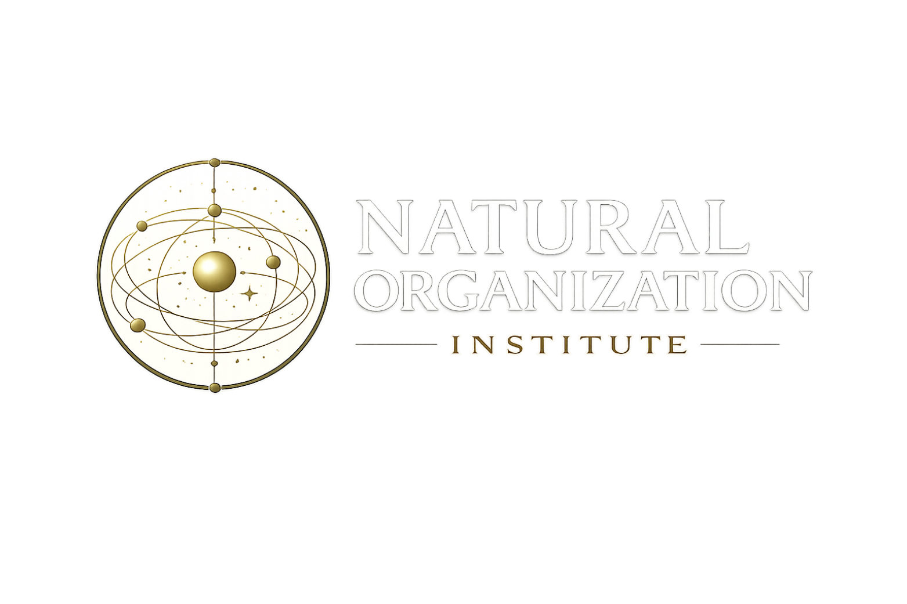

<!DOCTYPE html>
<html lang="en">
<head>
<meta charset="UTF-8">
<meta name="viewport" content="width=device-width, initial-scale=1.0">
<meta name="description" content="16-axiom first-order logical framework grounding constitutive intelligence. Lemma 0 establishes that the existence of Int₀ follows logically from the empirically confirmed conservation principle and universal nonzero constraint density. Theorem 1 establishes comparator primacy over all laws.">
<meta name="keywords" content="formal logic, first-order logic, constitutive intelligence, Lemma 0, comparator primacy, conservation principle, constraint density, axiomatization, mathematical comparator, Noether theorem">
<meta name="author" content="P.B. Van Slyke, Natural Organization Institute">
<meta name="robots" content="index, follow">
<link rel="canonical" href="https://naturalorganization.org/paper-09-formal-logic.html">

<!-- Open Graph -->
<meta property="og:type" content="article">
<meta property="og:url" content="https://naturalorganization.org/paper-09-formal-logic.html">
<meta property="og:title" content="Cosmic Intelligence Model: Formal First-Order Logical Axiomatization of Constitutive Intelligence | Natural Organization Institute">
<meta property="og:description" content="16-axiom first-order logical framework grounding constitutive intelligence. Lemma 0 establishes that the existence of Int₀ follows logically from the empirically confirmed conservation principle and universal nonzero constraint density. Theorem 1 establishes comparator primacy over all laws.">
<meta property="og:image" content="https://naturalorganization.org/logo.png">
<meta property="og:site_name" content="Natural Organization Institute">

<!-- Twitter Card -->
<meta name="twitter:card" content="summary_large_image">
<meta name="twitter:title" content="Cosmic Intelligence Model: Formal First-Order Logical Axiomatization of Constitutive Intelligence">
<meta name="twitter:description" content="16-axiom first-order logical framework grounding constitutive intelligence. Lemma 0 establishes that the existence of Int₀ follows logically from the empirically confirmed conservation principle and universal nonzero constraint density. Theorem 1 establishes comparator primacy over all laws.">
<meta name="twitter:image" content="https://naturalorganization.org/logo.png">

<!-- Schema.org structured data -->
<script type="application/ld+json">
{
  "@context": "https://schema.org",
  "@type": "ScholarlyArticle",
  "headline": "Cosmic Intelligence Model: Formal First-Order Logical Axiomatization of Constitutive Intelligence",
  "description": "16-axiom first-order logical framework grounding constitutive intelligence. Lemma 0 establishes that the existence of Int₀ follows logically from the empirically confirmed conservation principle and universal nonzero constraint density. Theorem 1 establishes comparator primacy over all laws.",
  "author": {
    "@type": "Person",
    "name": "P.B. Van Slyke",
    "affiliation": {
      "@type": "Organization",
      "name": "Natural Organization Institute",
      "url": "https://naturalorganization.org"
    }
  },
  "publisher": {
    "@type": "Organization",
    "name": "Natural Organization Institute",
    "url": "https://naturalorganization.org",
    "logo": "https://naturalorganization.org/logo.png"
  },
  "datePublished": "2026",
  "url": "https://naturalorganization.org/paper-09-formal-logic.html"
}
<\/script>
<title>Formal Logic — Natural Organization Institute</title>
<link rel="preconnect" href="https://fonts.googleapis.com">
<link href="https://fonts.googleapis.com/css2?family=Cormorant+Garamond:ital,wght@0,300;0,400;0,500;0,600;1,300;1,400&family=Cinzel:wght@400;500&family=Source+Serif+4:ital,wght@0,300;0,400;0,600;1,300;1,400&family=JetBrains+Mono:wght@400;500&display=swap" rel="stylesheet">
<style>
  :root {
    --forest: #1a2e1a; --gold: #b8973a; --gold-light: #d4b45a;
    --ink: #1a1a1a; --ink-mid: #3a3a3a; --ink-light: #6a6a6a;
    --rule: #d8d0c0; --bg: #fafaf7; --bg-alt: #f4f1eb; --accent: #2d4a2d;
  }
  * { margin: 0; padding: 0; box-sizing: border-box; }
  html { scroll-behavior: smooth; }
  body { font-family: 'Source Serif 4', Georgia, serif; background: var(--bg); color: var(--ink); font-size: 17px; line-height: 1.8; }
  .top-nav { background: var(--forest); padding: 0.9rem 3rem; display: flex; align-items: center; justify-content: space-between; position: sticky; top: 0; z-index: 100; border-bottom: 2px solid var(--gold); }
  .top-nav-logo { font-family: 'Cinzel', serif; font-size: 0.65rem; letter-spacing: 0.2em; color: rgba(245,240,232,0.7); text-decoration: none; }
  .top-nav-logo:hover { color: var(--gold); }
  .top-nav-links { display: flex; gap: 2rem; align-items: center; }
  .top-nav-links a { font-family: 'Cinzel', serif; font-size: 0.58rem; letter-spacing: 0.15em; color: rgba(245,240,232,0.55); text-decoration: none; transition: color 0.2s; }
  .top-nav-links a:hover { color: var(--gold); }
  .download-btn { font-family: 'Cinzel', serif; font-size: 0.58rem; letter-spacing: 0.18em; color: var(--forest); background: var(--gold); padding: 0.5rem 1.2rem; text-decoration: none; transition: background 0.2s; }
  .download-btn:hover { background: var(--gold-light); }
  .paper-hero { background: var(--bg-alt); border-bottom: 1px solid var(--rule); padding: 4rem 0 3rem; }
  .paper-hero-inner { max-width: 860px; margin: 0 auto; padding: 0 3rem; }
  .paper-series { font-family: 'Cinzel', serif; font-size: 0.6rem; letter-spacing: 0.3em; color: var(--gold); margin-bottom: 1.2rem; }
  .paper-series::before { content: '— '; } .paper-series::after { content: ' —'; }
  .paper-title { font-family: 'Cormorant Garamond', serif; font-size: clamp(1.8rem, 3.5vw, 3rem); font-weight: 400; color: var(--forest); line-height: 1.2; margin-bottom: 1.5rem; }
  .paper-meta { display: flex; flex-wrap: wrap; gap: 2rem; margin-bottom: 2rem; padding-bottom: 2rem; border-bottom: 1px solid var(--rule); }
  .paper-meta-item .label { font-family: 'Cinzel', serif; font-size: 0.52rem; letter-spacing: 0.2em; color: var(--ink-light); display: block; margin-bottom: 0.2rem; }
  .paper-meta-item .value { font-size: 0.95rem; color: var(--ink-mid); }
  .paper-actions { display: flex; gap: 1rem; flex-wrap: wrap; }
  .btn-download { font-family: 'Cinzel', serif; font-size: 0.6rem; letter-spacing: 0.18em; color: white; background: var(--forest); padding: 0.75rem 1.8rem; text-decoration: none; transition: background 0.2s; display: inline-flex; align-items: center; gap: 0.5rem; }
  .btn-download:hover { background: var(--accent); }
  .btn-download svg { width: 14px; height: 14px; stroke: currentColor; fill: none; }
  .btn-back { font-family: 'Cinzel', serif; font-size: 0.6rem; letter-spacing: 0.18em; color: var(--ink-mid); background: transparent; padding: 0.75rem 1.8rem; text-decoration: none; border: 1px solid var(--rule); transition: all 0.2s; }
  .btn-back:hover { border-color: var(--gold); color: var(--gold); }
  .content-wrap { max-width: 860px; margin: 0 auto; padding: 4rem 3rem; }
  .toc { background: var(--bg-alt); border: 1px solid var(--rule); border-left: 3px solid var(--gold); padding: 1.8rem 2rem; margin-bottom: 3.5rem; }
  .toc-title { font-family: 'Cinzel', serif; font-size: 0.6rem; letter-spacing: 0.25em; color: var(--ink-light); margin-bottom: 1rem; }
  .toc ol { list-style: none; counter-reset: toc; }
  .toc ol li { counter-increment: toc; padding: 0.3rem 0; }
  .toc ol li::before { content: counter(toc) ". "; font-family: 'Cinzel', serif; font-size: 0.75rem; color: var(--gold); margin-right: 0.3rem; }
  .toc ol li a { font-size: 0.95rem; color: var(--ink-mid); text-decoration: none; transition: color 0.2s; }
  .toc ol li a:hover { color: var(--forest); }
  .paper-section { margin-bottom: 3.5rem; }
  .paper-section h2 { font-family: 'Cormorant Garamond', serif; font-size: 1.7rem; font-weight: 500; color: var(--forest); margin-bottom: 1.2rem; padding-bottom: 0.6rem; border-bottom: 1px solid var(--rule); }
  .paper-section h3 { font-family: 'Cormorant Garamond', serif; font-size: 1.25rem; font-weight: 500; color: var(--ink); margin: 1.8rem 0 0.8rem; }
  .paper-section p { margin-bottom: 1.1rem; color: var(--ink-mid); }
  .paper-section p strong { color: var(--ink); font-weight: 600; }
  .paper-section p em { font-style: italic; color: var(--accent); }
  .abstract-box { background: var(--bg-alt); border-left: 3px solid var(--forest); padding: 1.8rem 2rem; margin-bottom: 1.5rem; font-size: 1rem; line-height: 1.85; color: var(--ink-mid); }
  .abstract-box p { margin-bottom: 0.8rem; } .abstract-box p:last-child { margin-bottom: 0; }
  .table-wrap { overflow-x: auto; margin: 1.5rem 0 2rem; }
  table { width: 100%; border-collapse: collapse; font-size: 0.92rem; }
  thead th { font-family: 'Cinzel', serif; font-size: 0.55rem; letter-spacing: 0.15em; color: var(--ink-light); text-align: left; padding: 0.7rem 1rem; border-bottom: 2px solid var(--forest); background: var(--bg-alt); }
  tbody td { padding: 0.6rem 1rem; border-bottom: 1px solid var(--rule); color: var(--ink-mid); vertical-align: top; }
  tbody tr:hover { background: var(--bg-alt); }
  tbody td strong { color: var(--ink); }
  .table-caption { font-size: 0.85rem; color: var(--ink-light); font-style: italic; margin-top: 0.5rem; text-align: center; }
  .stat-grid { display: grid; grid-template-columns: repeat(3, 1fr); gap: 1.5rem; margin: 2rem 0; }
  .stat-card { background: var(--forest); padding: 1.5rem; text-align: center; }
  .stat-card .val { font-family: 'Cormorant Garamond', serif; font-size: 2rem; color: var(--gold-light); display: block; line-height: 1.1; }
  .stat-card .lbl { font-family: 'Cinzel', serif; font-size: 0.5rem; letter-spacing: 0.16em; color: rgba(245,240,232,0.5); margin-top: 0.3rem; display: block; }
  .axiom { background: var(--bg-alt); border: 1px solid var(--rule); border-left: 3px solid var(--forest); padding: 1.2rem 1.5rem; margin: 1rem 0; }
  .axiom-num { font-family: 'Cinzel', serif; font-size: 0.52rem; letter-spacing: 0.2em; color: var(--forest); margin-bottom: 0.4rem; }
  .axiom-title { font-family: 'Cormorant Garamond', serif; font-size: 1rem; font-weight: 500; color: var(--ink); margin-bottom: 0.4rem; }
  .axiom-formula { font-family: 'JetBrains Mono', monospace; font-size: 0.8rem; color: var(--accent); background: rgba(45,74,45,0.08); padding: 0.4rem 0.8rem; margin: 0.4rem 0; display: block; border-radius: 2px; }
  .axiom p { margin: 0; font-size: 0.95rem; color: var(--ink-mid); }
  .lemma { background: #e8f0e8; border: 1px solid rgba(45,74,45,0.2); border-left: 3px solid var(--accent); padding: 1.5rem; margin: 1.5rem 0; }
  .lemma-title { font-family: 'Cinzel', serif; font-size: 0.6rem; letter-spacing: 0.2em; color: var(--accent); margin-bottom: 0.6rem; }
  .lemma p { margin-bottom: 0.8rem; color: var(--ink-mid); font-size: 0.98rem; }
  .lemma p:last-child { margin-bottom: 0; }
  .lemma .formula { font-family: 'JetBrains Mono', monospace; font-size: 0.82rem; color: var(--accent); display: block; margin: 0.6rem 0; padding: 0.5rem; background: rgba(45,74,45,0.06); }
  .theorem { background: var(--forest); padding: 2rem; margin: 2rem 0; }
  .theorem-title { font-family: 'Cinzel', serif; font-size: 0.6rem; letter-spacing: 0.2em; color: var(--gold); margin-bottom: 0.8rem; }
  .theorem p { color: rgba(245,240,232,0.8); margin-bottom: 0.8rem; font-size: 0.98rem; }
  .theorem p:last-child { margin-bottom: 0; }
  .theorem .formula { font-family: 'JetBrains Mono', monospace; font-size: 0.82rem; color: var(--gold-light); display: block; margin: 0.6rem 0; }
  .callout { background: #fff8e8; border: 1px solid #e8d48a; border-left: 3px solid var(--gold); padding: 1.2rem 1.5rem; margin: 1.5rem 0; }
  .callout p { margin: 0; font-size: 0.98rem; color: var(--ink-mid); }
  .chain-box { background: var(--bg-alt); border: 1px solid var(--rule); padding: 1.5rem 2rem; margin: 1.5rem 0; font-family: 'JetBrains Mono', monospace; font-size: 0.85rem; color: var(--accent); line-height: 2; overflow-x: auto; }
  .keywords { display: flex; flex-wrap: wrap; gap: 0.5rem; margin-top: 1rem; }
  .keyword { font-family: 'Cinzel', serif; font-size: 0.52rem; letter-spacing: 0.15em; color: var(--ink-mid); border: 1px solid var(--rule); padding: 0.3rem 0.8rem; }
  .paper-nav { display: flex; justify-content: space-between; align-items: center; border-top: 1px solid var(--rule); padding-top: 2.5rem; margin-top: 4rem; }
  .paper-nav a { font-family: 'Cinzel', serif; font-size: 0.6rem; letter-spacing: 0.15em; color: var(--ink-light); text-decoration: none; transition: color 0.2s; }
  .paper-nav a:hover { color: var(--gold); }
  .paper-nav .next { text-align: right; }
  .paper-nav .label { display: block; font-size: 0.5rem; letter-spacing: 0.2em; color: var(--gold); opacity: 0.7; margin-bottom: 0.3rem; }
  footer { background: var(--forest); padding: 2rem 3rem; text-align: center; border-top: 2px solid var(--gold); }
  footer p { font-family: 'Cinzel', serif; font-size: 0.55rem; letter-spacing: 0.2em; color: rgba(245,240,232,0.3); }
  @media (max-width: 700px) {
    .top-nav { padding: 0.9rem 1.5rem; }
    .paper-hero-inner, .content-wrap { padding-left: 1.5rem; padding-right: 1.5rem; }
    .stat-grid { grid-template-columns: 1fr; }
    .paper-nav { flex-direction: column; gap: 1.5rem; }
  }
</style>
</head>
<body>

<nav class="top-nav">
  <a href="index.html" class="top-nav-logo"></a>
  <div class="top-nav-links">
    <a href="index.html#papers">All Papers</a>
    <a href="index.html#contact">Contact</a>
    <a href="papers/paper-09-formal-logic.pdf" download class="download-btn">Download PDF</a>
  </div>
</nav>

<div class="paper-hero">
  <div class="paper-hero-inner">
    <p class="paper-series">Paper 09 of 09</p>
    <h1 class="paper-title">Cosmic Intelligence Model: Formal First-Order Logical and Symbolic Representation</h1>
    <div class="paper-meta">
      <div class="paper-meta-item"><span class="label">Author</span><span class="value">P.B. Van Slyke</span></div>
      <div class="paper-meta-item"><span class="label">Institution</span><span class="value">Natural Organization Institute, Lyons, Colorado</span></div>
      <div class="paper-meta-item"><span class="label">Series Position</span><span class="value">Paper 5 in the Constitutive Intelligence Series</span></div>
      <div class="paper-meta-item"><span class="label">Status</span><span class="value">Natural Organization Institute — April 2026</span></div>
    </div>
    <div class="paper-actions">
      <a href="papers/paper-09-formal-logic.pdf" download class="btn-download">
        <svg viewBox="0 0 24 24" stroke-width="2"><path d="M21 15v4a2 2 0 0 1-2 2H5a2 2 0 0 1-2-2v-4"/><polyline points="7 10 12 15 17 10"/><line x1="12" y1="15" x2="12" y2="3"/></svg>
        Download PDF
      </a>
      <a href="index.html" class="btn-back">← Back to Institute</a>
    </div>
  </div>
</div>

<div class="content-wrap">

  <div class="toc">
    <p class="toc-title">Contents</p>
    <ol>
      <li><a href="#abstract">Abstract</a></li>
      <li><a href="#lemma0">Lemma 0 — Grounding the Existence Claim</a></li>
      <li><a href="#lemma0b">Lemma 0b — The Comparator as Ground</a></li>
      <li><a href="#axioms">The 16-Axiom Framework</a></li>
      <li><a href="#theorem1">Theorem 1 — Comparator Primacy</a></li>
      <li><a href="#chain">The Unified Functional Chain</a></li>
      <li><a href="#burden">The Burden of Proof Has Shifted</a></li>
      <li><a href="#nomenclature">A Note on Nomenclature</a></li>
      <li><a href="#conclusion">Conclusion</a></li>
    </ol>
  </div>

  <div class="paper-section" id="abstract">
    <h2>Abstract</h2>
    <div class="abstract-box">
      <p>This document provides the formal first-order logical and symbolic axiomatization of Constitutive Intelligence (CI) as a foundation for the empirical and philosophical framework developed across the companion papers. A central contribution is <strong>Lemma 0</strong> — a bridging derivation establishing that Axiom 1 (the existence of Int₀) is not a bare assumption but a logical consequence of the empirically confirmed conservation principle and the universal nonzero constraint density ΔC &gt; 0.</p>
      <p>Lemma 0b further establishes that the mathematical comparator is logically prior to all laws. Sixteen formal first-order logic axioms are presented, grounding constitutive intelligence from Primacy of Int₀ through Comparator Necessity and Mathematics as Primitive Comparator. Theorem 1 (Comparator Primacy) is derived formally from the axiom set.</p>
      <p>The framework is empirically anchored by 61,320,087 Anchor-Single pair observations confirming ΔC &gt; 0 universally and by 16 biological measurements confirming that no system retreats to the maximum entropy baseline.</p>
    </div>
    <div class="stat-grid">
      <div class="stat-card"><span class="val">16</span><span class="lbl">Formal First-Order Logic Axioms</span></div>
      <div class="stat-card"><span class="val">2</span><span class="lbl">Bridging Lemmas (0 and 0b)</span></div>
      <div class="stat-card"><span class="val">ΔC &gt; 0</span><span class="lbl">Universal at All 16 Measurement Points</span></div>
    </div>
  </div>

  <div class="paper-section" id="lemma0">
    <h2>Lemma 0 — Grounding the Existence Claim</h2>
    <p>The most important contribution of this paper is establishing that the existence of constitutive intelligence (Int₀) is not a bare foundational assumption but follows with logical necessity from two independently established premises.</p>

    <div class="lemma">
      <p class="lemma-title">Premise L1 — Universal Nonzero Constraint Density (Empirical)</p>
      <span class="formula">ΔC(N) = 1 − H_observed(N) / H_max(N) &gt; 0</span>
      <p>Confirmed across 16 independent measurements: four organisms (E. coli K-12, Human BRCA1, S. cerevisiae Chr1, Human COX1 mitochondrial) at four complexity levels (mononucleotide, dinucleotide, codon, amino acid). ΦCI = sup{ΔC(N)} = 0.2080 (Human BRCA1, codon level). <strong>No system retreats to the maximum entropy baseline. Structure is present at every measurable level.</strong></p>
    </div>

    <div class="lemma">
      <p class="lemma-title">Premise L2 — Conservation Principle (Logical / Thermodynamic)</p>
      <span class="formula">∀x∀y(Produces(x, y) → I(y) ≤ I(x))</span>
      <p>No system produces output whose information content exceeds its source. This is simultaneously a thermodynamic necessity (First Law: energy is conserved), a logical necessity (a system cannot output what it does not contain), and a mathematical necessity (Shannon entropy cannot increase without external input). It has never been successfully challenged in physics, mathematics, or logic.</p>
    </div>

    <div class="lemma">
      <p class="lemma-title">Premise L3 — Intelligence Advances in Matter (Observed)</p>
      <p>The measured progression from ΔC = 0.0592 at mononucleotide level to ΔC = 0.2080 at the codon level in BRCA1 demonstrates that organizational intelligence accumulates in matter across complexity levels. This is not contested.</p>
    </div>

    <div class="theorem">
      <p class="theorem-title">Derivation of Lemma 0</p>
      <p><strong>Step 1:</strong> By L1, ΔC(N) &gt; 0 at inception. Structure was present before any accumulation of complexity. It cannot have retreated to zero and reappeared, since L2 forbids the generation of constraint from zero constraint.</p>
      <p><strong>Step 2:</strong> By L2, nothing produces more than its source. Intelligence advances in matter (L3). Therefore the source of material intelligence already contains what matter has expressed — and exceeds it, since ΦCI &gt; ΔC(N) at 15 of 16 measurement points.</p>
      <p><strong>Step 3:</strong> A source that (i) was present at inception, (ii) has never been absent (ΔC &gt; 0 always), (iii) already exceeds every level of intelligence matter has expressed, and (iv) contains all possible intelligence as potential satisfies the functional definition of constitutive intelligence.</p>
      <p><strong>Step 4:</strong> The conservation law itself requires criterion-governed differential constraint at every point — distinguishing states that satisfy conservation from those that do not. That is discernment by functional definition. The First Law does not merely permit intelligence at the foundation. <strong>It requires it.</strong></p>
      <span class="formula">Conclusion: ∃x[Intelligence(x) ∧ ∀N(ΔC(N) &gt; 0) ∧ ∀y(Produces(x, y) → I(y) ≤ I(x))]</span>
    </div>
  </div>

  <div class="paper-section" id="lemma0b">
    <h2>Lemma 0b — The Comparator as Ground</h2>
    <div class="callout">
      <p><strong>The Standard Move That Fails:</strong> Invoking conservation as "a law of nature" and treating that name as a sufficient account fails at precisely the point it is most needed. A law that holds without exception is not a passive description of reality. It is an active operational constraint that distinguishes, at every interaction and without deviation, between the states that satisfy it and the vastly larger set of states that would violate it. Naming that constraint "conservation" does not explain what is doing the distinguishing.</p>
    </div>

    <p>The capacity to maintain a distinction between categories of states — consistently, without exception, according to a criterion — is what discernment means at its most stripped-down functional level. Not discernment in the psychological sense. Not awareness or intention. Simply: the operational capacity to treat this state differently from that state according to a maintained criterion. Conservation is that capacity, operating universally.</p>

    <div class="theorem">
      <p class="theorem-title">Lemma 0b — Formal Statement</p>
      <p>The criterion-governed differential constraint required by conservation (Lemma 0, Step 4) is mathematical comparison. Therefore:</p>
      <span class="formula">Conservation ⟹ ∃κ(Mathematical(κ) ∧ ∀L(Law(L) → Prior(κ, L)))</span>
      <p>The conservation law does not merely permit intelligence at the foundation. It requires the mathematical comparator as the ground of all laws. Int₀ is this comparator — the capacity to distinguish, compare, and constrain according to maintained criteria.</p>
    </div>
  </div>

  <div class="paper-section" id="axioms">
    <h2>The 16-Axiom Framework</h2>
    <p>The following 16 axioms constitute the formal first-order logical foundation of Constitutive Intelligence. Each is grounded by Lemma 0, Lemma 0b, or direct empirical measurement.</p>

    <div class="axiom">
      <p class="axiom-num">Axiom 1</p>
      <p class="axiom-title">Primacy of Int₀</p>
      <span class="axiom-formula">∃x Intelligence(x) ∧ ∀y(Intelligence(y) ∧ y ≠ x → Manifests(x, y, ·))</span>
      <p>There exists an intelligence Int₀, and every other intelligence is a manifestation of it. Grounded by Lemma 0 — the existential quantifier is no longer a bare assumption but a logical consequence of ΔC &gt; 0 universally and the conservation principle.</p>
    </div>

    <div class="axiom">
      <p class="axiom-num">Axiom 2</p>
      <p class="axiom-title">Generation of Order and Laws</p>
      <span class="axiom-formula">Generates(Int₀, O) ∧ ∀l(Law(l) → Generates(Int₀, l))</span>
      <p>Int₀ generates order and all laws. The NOI = 0.90 convergence across molecular to astronomical scales confirms that ordered states substantially exceed disrupted states universally.</p>
    </div>

    <div class="axiom">
      <p class="axiom-num">Axiom 5</p>
      <p class="axiom-title">Epistemic Randomness</p>
      <span class="axiom-formula">∀e∀a∃r(R(r) ↔ (Event(e) ∧ ¬∀c(Constrains(c, e) → Known(c, a))))</span>
      <p>Randomness is the property of an event whose constraining factors are not fully known to an actualizer. Empirically confirmed: A→N is avoided at Z = −87.13 in functional sequences — the constraint is real, not absent. The observer's incomplete knowledge produces apparent randomness.</p>
    </div>

    <div class="axiom">
      <p class="axiom-num">Axiom 9</p>
      <p class="axiom-title">Conservation of Information</p>
      <span class="axiom-formula">∀ie∀i₀(Manifests(i₀, ie, ·) → I(ie) ≤ I(i₀))</span>
      <p>For any manifestation, the information content of the emergent is less than or equal to that of the source. Empirically confirmed: ΦCI = 0.2080 and Gap G(N) = ΦCI − ΔC(N) &gt; 0 at 15 of 16 measurement points. No biological system reaches the source ceiling.</p>
    </div>

    <div class="axiom">
      <p class="axiom-num">Axiom 10</p>
      <p class="axiom-title">Non-Generation</p>
      <span class="axiom-formula">∀ie¬∃i₀(ie ≠ i₀ ∧ Generates(i₀, ie))</span>
      <p>No emergent intelligence is generated de novo; all are manifestations. The accumulation-impossibility argument: zero instances of intelligence multiplied by any number of steps yields zero intelligence. Darwin's own falsification condition is satisfied: the categorical functional-disordered reversal cannot arise incrementally from non-intelligence.</p>
    </div>

    <div class="axiom">
      <p class="axiom-num">Axiom 11</p>
      <p class="axiom-title">Comparator Necessity</p>
      <span class="axiom-formula">∀x∀y(Produces(x, y) → ∃κ(Comparator(κ) ∧ Distinguishes(κ, x, y)))</span>
      <p>Any production relation (including conservation) requires a comparator that distinguishes compliant from non-compliant states.</p>
    </div>

    <div class="axiom">
      <p class="axiom-num">Axiom 12</p>
      <p class="axiom-title">Mathematics as Comparator</p>
      <span class="axiom-formula">∀κ(Comparator(κ) ↔ Mathematical(κ))</span>
      <p>The necessary comparator is mathematical in nature — constituted by equality, inequality, symmetry, invariance, and criterion-based evaluation.</p>
    </div>

    <div class="axiom">
      <p class="axiom-num">Axiom 13</p>
      <p class="axiom-title">Noether Symmetry Presupposition</p>
      <span class="axiom-formula">∀σ(Symmetry(σ) → Distinguishes(κ_σ, symmetric, non-symmetric))</span>
      <p>Noether's theorem presupposes the very comparator capacity it is invoked to explain. Conservation laws derived from symmetries require the capacity to distinguish symmetric from non-symmetric states — which is precisely the comparator that Lemma 0b demonstrates must be prior to all laws.</p>
    </div>

    <div class="axiom">
      <p class="axiom-num">Axiom 15</p>
      <p class="axiom-title">Comparator Primacy</p>
      <span class="axiom-formula">∀L(Law(L) → ¬∃κ(Comparator(κ) ∧ Derived(κ, L)))</span>
      <p>No comparator is derived from laws; comparators are logically prior to laws.</p>
    </div>
  </div>

  <div class="paper-section" id="theorem1">
    <h2>Theorem 1 — Comparator Primacy</h2>
    <div class="theorem">
      <p class="theorem-title">Formal Derivation</p>
      <p>From Axioms 15 and 16:</p>
      <span class="formula">∀L(Law(L) → ∃κ(Mathematical(κ) ∧ Prior(κ, L)))</span>
      <p>For every law, there exists a mathematical comparator that is logically prior to it.</p>
      <p>Furthermore, from Lemma 0b and Axiom 1:</p>
      <span class="formula">Int₀ ≡ κ</span>
      <p>Int₀ <em>is</em> the mathematical comparator — the capacity to distinguish, compare, and constrain according to maintained criteria. Not a being who possesses this capacity. The capacity itself, operating at the ground of existence.</p>
    </div>

    <p>This result has a specific consequence for the philosophy of physics. Noether's theorem derives conservation laws from symmetries. But symmetries are mathematical structures — and mathematical structures require the comparator capacity to be meaningful. The conservation laws invoked to explain why intelligence is not required at the foundation themselves presuppose the comparator that is the functional definition of intelligence at its most minimal level.</p>
    <div class="callout">
      <p><strong>The critic who rejects Theorem 1 must provide a positive account of how conservation operates without the capacity to distinguish compliant from non-compliant states.</strong> Not a preference. Not a prior commitment to materialism. Not a name. An account. That account does not exist in the physical, mathematical, or philosophical literature. Its absence is not a gap in this framework. It is the completion of it.</p>
    </div>
  </div>

  <div class="paper-section" id="chain">
    <h2>The Unified Functional Chain</h2>
    <p>From the axioms, grounded by Lemma 0 and Lemma 0b, the following logical consequence is derived:</p>
    <div class="chain-box">
Int₀ ≡ κ (Mathematical Comparator — logically prior)
    ↓
(O, L, S) [Order, Laws, Source Information]
    ↓
E [Events — constrained by all laws and source]
    ↓ −C [Apparent randomness from incomplete constraints]
(D, Rk) [Differentiation and Recognition]
    ↓ M [Threshold condition]
Inte [Emergent Intelligence]

Compact form:
Inte(t) = M(Int₀, C, argmax_a Φ(a, C, t))
    </div>

    <p>The empirical trajectory of this chain is formalized in the Generalized Existence Equation:</p>
    <div class="chain-box">
Xf(t) = ∫[t₀→tₙ] ( ΦCI · κ · ΔIsys / Ωsys ) − εsys dt
    </div>
  </div>

  <div class="paper-section" id="burden">
    <h2>The Burden of Proof Has Shifted</h2>
    <p>Up to Step 3 of Lemma 0, the burden is on this framework: demonstrate ΔC &gt; 0, demonstrate conservation, demonstrate accumulation. Those burdens are met empirically across 16 biological measurements and 61 million Anchor-Single pair observations.</p>
    <p>At Step 4 the burden shifts permanently to the critic. The critic who rejects Step 4 must provide a positive account of how conservation operates without the capacity to distinguish compliant from non-compliant states. This account must be:</p>
    <ul style="list-style:none; margin: 1rem 0;">
      <li style="padding: 0.4rem 0; border-bottom: 1px solid var(--rule); color: var(--ink-mid); padding-left: 1rem; position: relative;"><span style="position:absolute; left:0; color:var(--gold);">—</span> Not a preference for a prior commitment to materialism</li>
      <li style="padding: 0.4rem 0; border-bottom: 1px solid var(--rule); color: var(--ink-mid); padding-left: 1rem; position: relative;"><span style="position:absolute; left:0; color:var(--gold);">—</span> Not a name ("it's just a law")</li>
      <li style="padding: 0.4rem 0; border-bottom: 1px solid var(--rule); color: var(--ink-mid); padding-left: 1rem; position: relative;"><span style="position:absolute; left:0; color:var(--gold);">—</span> Not an appeal to mystery ("physics is just like that")</li>
      <li style="padding: 0.4rem 0; color: var(--ink-mid); padding-left: 1rem; position: relative;"><span style="position:absolute; left:0; color:var(--gold);">—</span> A positive account of what does the distinguishing, without presupposing the capacity to distinguish</li>
    </ul>
    <p>That account does not exist in the physical, mathematical, or philosophical literature. Its absence is not a gap in this framework. <strong>It is the completion of it.</strong></p>
  </div>

  <div class="paper-section" id="nomenclature">
    <h2>A Note on Nomenclature</h2>
    <p>The formal system presented here identifies Int₀ as the mathematical comparator — the capacity to distinguish, compare, and constrain according to maintained criteria, operating at the ground of existence. It does not further specify what this capacity is in any theological, metaphysical, or personal sense.</p>
    <p>The nomenclature — constitutive intelligence, God, the Tao, Brahman, the ground of being, the Logos, the mathematical Platonic realm — is left entirely to the observer. The formal system and its empirical grounding are independent of any label.</p>
    <div class="callout">
      <p><em>The measurement says the same thing regardless of what the observer calls it. The 61 million Anchor-Single observations do not change depending on whether the reader is a materialist or a theist. The conservation principle does not change. The burden of proof does not change. The formal derivation does not change. What changes is only what the reader chooses to call what the evidence points toward.</em></p>
    </div>
  </div>

  <div class="paper-section" id="conclusion">
    <h2>Conclusion</h2>
    <p>The Cosmic Intelligence Model provides the formal logical foundation for the Constitutive Intelligence research program. Lemma 0 establishes that the existence of Int₀ is not a bare assumption but a logical consequence of empirically confirmed premises. Lemma 0b establishes that the mathematical comparator is logically prior to all laws. Theorem 1 derives Comparator Primacy formally from the axiom set.</p>
    <p>The 16-axiom framework grounds every component of the argument — from the primacy of Int₀ through the conservation of information and the non-generation of intelligence de novo — in either empirical measurement or logical necessity. The unified functional chain connects the mathematical comparator at the ground of existence to emergent intelligence in biological systems through a sequence of formally grounded steps.</p>
    <p>The burden of proof has permanently shifted. The empirical measurements are in. The logical derivation is complete. What remains is the account — not of what the evidence shows, but of what the observer chooses to call it.</p>

    <div class="keywords">
      <span class="keyword">First-Order Logic</span>
      <span class="keyword">Constitutive Intelligence</span>
      <span class="keyword">Lemma 0</span>
      <span class="keyword">Comparator Primacy</span>
      <span class="keyword">Conservation Principle</span>
      <span class="keyword">Mathematical Comparator</span>
      <span class="keyword">Formal Axiomatization</span>
      <span class="keyword">Noether's Theorem</span>
    </div>
  </div>

  <div class="paper-nav">
    <div class="prev">
      <a href="paper-08-branching-sensitivity.html"><span class="label">← Previous Paper</span>Branching Sensitivity</a>
    </div>
    <div class="next">
      <a href="index.html"><span class="label">Return To →</span>Institute Home</a>
    </div>
  </div>

</div>

<footer>
  <p>Natural Organization Institute &nbsp;|&nbsp; Lyons, Colorado &nbsp;|&nbsp; van.slyke@naturalorganization.org &nbsp;|&nbsp; naturalorganization.org</p>
</footer>
</body>
</html>
